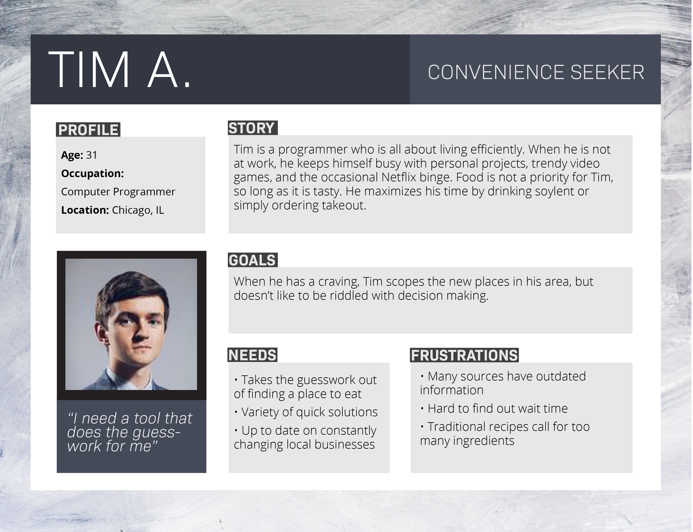
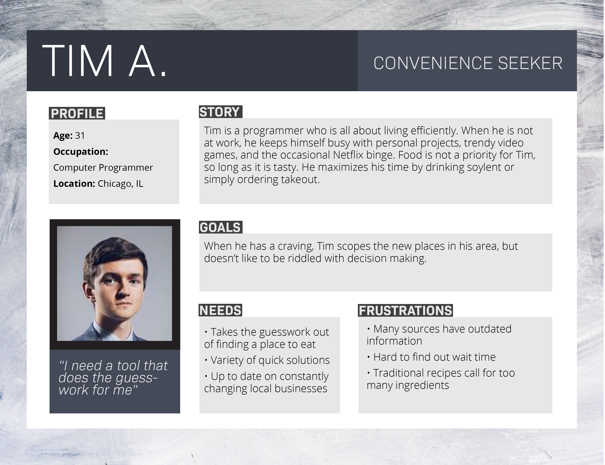

CRAVERY
Cravery is a quirky, fun, and reliable tool that takes the guesswork out of eating. Whether you are feeling adventurous enough to try a new spot in town, or looking to whip up something quick in the kitchen, Cravery will help you satisfy your craving sooner than you can say “YUMMM!”
the problem
There are many food applications on the market, each providing separate services like food delivery, recipe inspiration, or restaurant reviews. However, as a hungry consumer using such applications, one must always have a specific food desire in mind. To use Yelp, you must have a specific cuisine in mind before searching. To find a recipe online, you need to know what dish to search up.
But what about those moments when you are craving something sweet, but only have crackers in the pantry? Or those restless evenings of wanting a savory comfort food, but can’t place your finger on what would do the trick? After returning home from a long day at work, or waking up after a night out with no food in the fridge, the last thing a tired mind wants to do is think of how to get some food.
the solution
Cravery is designed to take the guesswork out of eating, even when you don’t know what you want to eat. Featuring a short quiz to assess your latest food desires, Cravery lays out the easiest options for you. With a simple interface, fun iconography, and tantalizing colors, this app is designed to make trying new foods fun. When hunger strikes, it strikes hard. Cravery helps you find the quickest way to get your food craving onto your plate.
user research
To figure out the common eating habits and lifestyle of potential users, I conducted a survey among 20 respondents that assessed how often people have food cravings and what they do to satisfy it, along with frustrations people have towards popular food apps and services.
The key takeaways from the survey were:
- Most people experience food cravings on a weekly basis
- Most people resort to eating out to satisfy their craving
- Most spend some time cooking meals throughout the week
- When looking for or recipes or healthier alternatives, most people use online resources
user personas
I interviewed select respondents in order to gain a better perspective of concerns relating to cravings and food apps.
From there, I categorized my findings into 3 different user personas.
 

competitive analysis
The survey revealed that respondents typically resort to apps like Yelp to research restaurants, and use online search engines for recipes. There are a lot of food related apps on market, but the category is dominated by Yelp as a whole. I analyzed Yelp and two other popular food apps in order to determine what my product would need to provide to users. In my SWOT analysis, I covered the strengths, weaknesses, and potential threats posed by Yelp, Yummly, and Tasty.

user stories
I then compiled a list of tasks that users would want to accomplish with this product.
This helped me later produce a working minimum viable product with features focused on browsing and saving information.

user flows & sitemap
I used the user stories as a guideline for the tasks that users would want to accomplish with the product and converted the list into a visual outline of user flows. I then formalized the user flows and created a sitemap to determine what screens needed to be created for a minimum viable product.

branding
My goal with this product was to create an app that made the task of searching up food fun and easy.
I accomplished this through the use of playful iconography, springy graphic design, and fresh color scheme.
logo
iconography & graphics
colors
low fidelity wireframing
I drew up low fidelity wireframes first on sketch. This allowed me to conduct some preliminary testing before making final design decisions for the high fidelity frames. Through user testing I confirmed that my initial design ideas flowed intuitively. You will see that the low and high fidelity wireframes feature elements such as a home and search page.
high fidelity wireframing
mockups
Although the flow was a success with users, I later came to the realization that I was a bit overzealous about my product features. Yes, a homepage and search bar would be nice to have, but I realized that I had strayed from my main focus: producing a minimum viable product. So I ditched the home button, search bar, and ability to create personal item lists (for now), and focused on making my minimum viable product sparkle in all its simplified elegance. And voila! A mockup was formed.